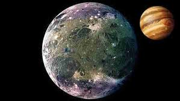

|

Ganymede (En Büyük Uydu)
Ganymede, Jüpiter’in en büyük uydusu olmasının yanı sıra, Güneş Sistemi’ndeki en büyük uydu unvanına sahiptir. Çapı yaklaşık 5.262 kilometre olan Ganymede,
hatta Merkür gezegeninden bile daha büyüktür. Bu dev uydu, hem büyüklüğü hem de karmaşık yapısı nedeniyle bilim insanlarının ilgisini çekmektedir.
Yüzeyi, buz tabakaları ve kayaç alanların birleşiminden oluşur. Yüzeyinde hem eski, çarpma kraterleriyle dolu karanlık bölgeler hem de daha genç, ışığı
daha fazla yansıtan parlak alanlar bulunur. Bu, Ganymede’in jeolojik olarak geçmişte aktif olduğuna dair güçlü bir kanıttır. Ayrıca yüzeyinin altında,
kalın bir buz tabakasının altında sıvı halde suyun bulunduğu düşünülmektedir. Bu da Ganymede’i, potansiyel olarak yaşam barındırma olasılığı bulunan gök
cisimlerinden biri haline getirir.
Ganymede’in bir başka dikkat çekici özelliği, kendi manyetik alanına sahip tek uydu olmasıdır. Bu durum, çekirdeğinde erimiş demir veya benzeri bir madde
bulunduğunu düşündürmektedir. Manyetik alanı, Jüpiter’in devasa manyetosferiyle etkileşime girerek kutup bölgelerinde aurora (kutup ışıkları) benzeri
parlamalar oluşturur.
Ganymede, bilimsel keşiflerde büyük önem taşır. NASA’nın Galileo ve Juno uzay araçları ile Avrupa Uzay Ajansı’nın JUICE görevi, bu uydunun yapısını daha
iyi anlamak için önemli veriler toplamıştır. Ganymede, büyüklüğü, su potansiyeli ve manyetik alanı ile Güneş Sistemi’nin en dikkat çekici uydularından
biridir.
|